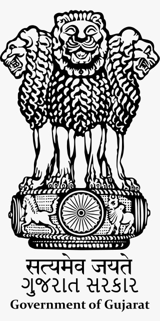

GOVERNMENT OF GUJARAT

The Government of Gujarat, also known as the State Government of Gujarat, or locally as State Government,
is the supreme governing authority of the Indian state of Gujarat and its 33 districts. It consists of an executive
of the legislators appointed by the Governor of Gujarat, a judiciary and of a publicly electedlegislative body.
Like other states in India, the head of state of Gujarat is the Governor, appointed by the President of India on the advice
of the Central (Union) government. His or her post is largely ceremonial, but considers the legislative composition and
appoints the Chief Minister, who is the main head of government, as chair of the
Council of Ministers of Gujarat and is vested, in some instances alone but as to most executive powers by Council
consensus with virtually all of the executive powers.
Gandhinagar, the capital of Gujarat, houses the relevant Vidhan Sabha (also known as the Gujarat Legislative Assembly)
and the secretariat. The Gujarat High
Court in Ahmedabad, has jurisdiction over the state as to state laws.
The present legislative assembly is unicameral, consisting of 182 Members of the Legislative Assembly (M.L.As).
Its term is 5 years, unless sooner dissolved.